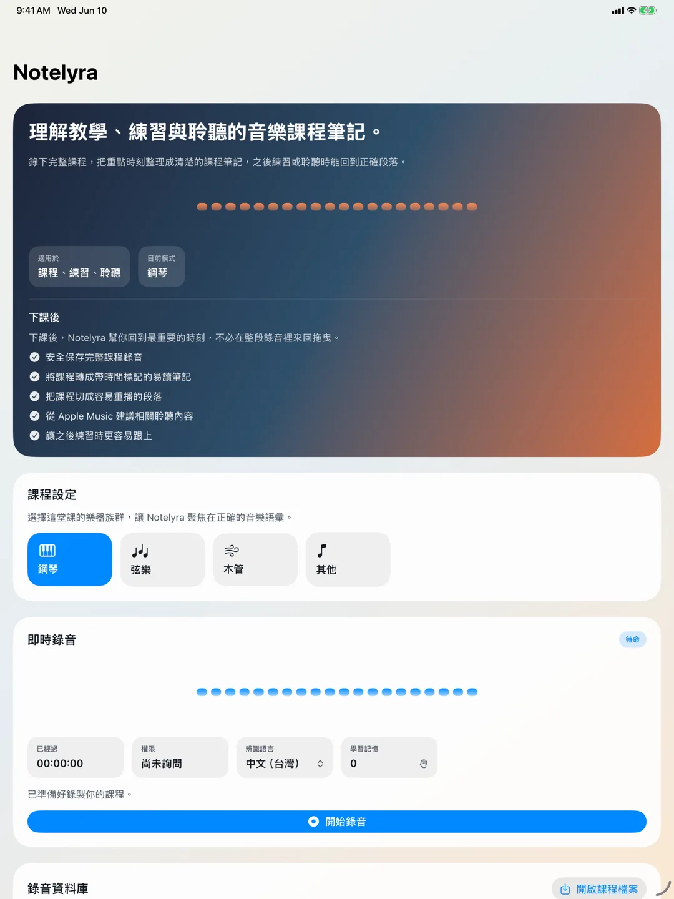
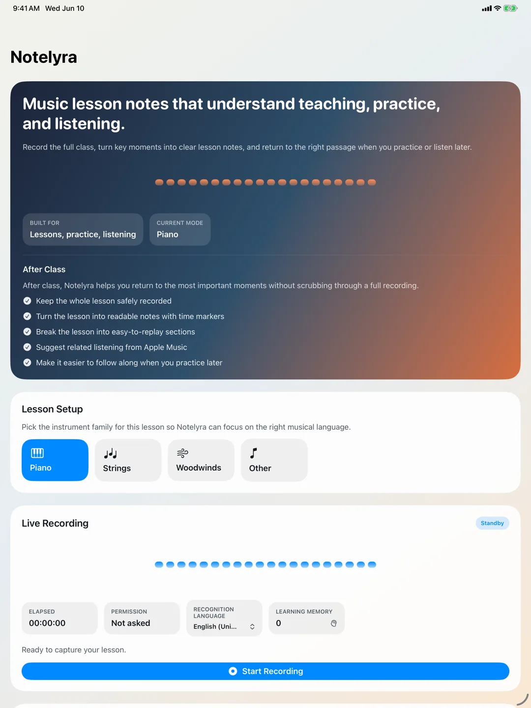

Notelyra
老師經常說：「學音樂，不只是練習，欣賞別人的音樂也很重要。」Notelyra 從這個想法出發，幫音樂學生把課堂、回家練習與聆聽參考連起來。
學音樂不只是把音符彈對。手指的熟練很重要，耳朵的養成也同樣重要。當學生能回到老師講過的地方，也能順著課堂內容去聽相關作品，練習才比較容易從重複動作變成理解聲音。
- 可用裝置
- iPhone / iPad
- 下載方式
- 付費下載

{kind=link}

把音樂課變成時間軸筆記
上課時可選擇正在學習的樂器並開始錄音。Notelyra 會把課程整理成帶有時間標籤的筆記，讓老師的講解、示範與練習提醒不會只留在模糊記憶裡。
回家練習時，跳回該聽的地方
課後可重新開啟錄音，依標題、時間標籤或重點片段跳回老師說明的位置。對學生來說，這比重聽整堂課更接近真正的練習需求。
從課堂延伸到聆聽
Notelyra 會從課程內容整理作曲家、作品、樂器與技巧相關的關鍵字，用於探索 Apple Music 上的相關音樂。當課堂提到 Mozart、K.545、樂句、左手或踏板時，學生可以順著這些線索去聽不同演奏家的詮釋。
記住音樂課常見術語
音樂課的轉錄很容易遇到作曲家、作品編號、術語或老師習慣用語。Notelyra 會根據使用者的文字修正建立學習記憶，之後協助改善課程筆記，讓越常使用的語彙越容易被保留下來。
適合誰使用
- 學鋼琴、弦樂、木管或其他樂器的學生
- 想幫孩子保存音樂課重點的家長
- 課後常忘記老師細節提醒的自學者
- 希望把練習與聆聽習慣連起來的音樂學習者
Notelyra
Teachers often say that learning music is not only about practice. Listening to other musicians matters too. Notelyra starts from that idea and helps music students connect lessons, home practice, and listening references.
Learning music is not just about playing the notes correctly. Finger practice matters, but ear training and musical taste matter as well. When students can return to what the teacher explained and follow lesson topics into real recordings, practice becomes more connected to sound.
- Devices
- iPhone / iPad
- Download
- Paid download

{kind=link}

Turn Lessons into Timeline Notes
During a lesson, students can choose the instrument being studied and start recording. Notelyra organizes the lesson into time-based notes, so teacher explanations, demonstrations, and practice reminders do not disappear into vague memory.
Replay the Moments That Matter
After class, students can reopen a lesson recording and jump back by title, time tag, or important segment. This makes review more focused than replaying an entire lesson from the beginning.
Extend Lessons into Listening
Notelyra extracts keywords related to composers, works, instruments, and techniques, then uses them to help discover related music on Apple Music. If a lesson mentions Mozart, K.545, phrasing, left hand, or pedal, students can follow those clues into different performances and interpretations.
Remember Musical Vocabulary
Music lesson transcription often involves composer names, catalogue numbers, technique terms, and each teacher's own wording. Notelyra can learn from text corrections and use that memory to improve later lesson notes.
Useful For
- Students learning piano, strings, woodwinds, or other instruments
- Parents who want to preserve lesson details for children
- Self-learners who often forget small teacher reminders after class
- Music learners who want to connect practice with better listening habits